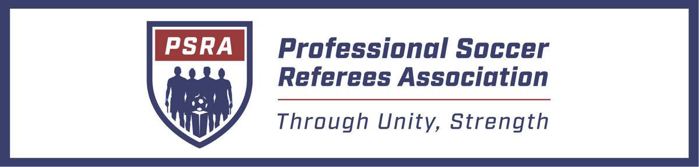
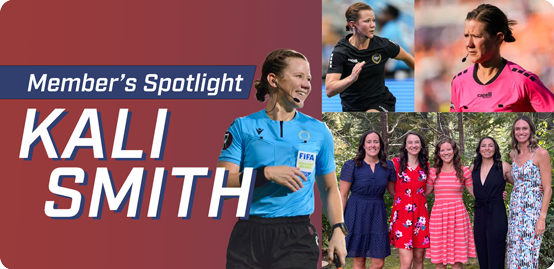

Dear Fellow Members,
What a summer it was! A huge congratulations to our brothers and sisters who did such excellent work at the World Cup – you made us all very proud! We are all impressed by your dedication over the years to prepare and perform so well at the World Cup. It certainly takes personal dedication and the dedication of family and friends to support each Official, particularly for a big tournament.
This Men's World Cup gave us a chance to see excellent competition and dramatic matches. I think we all hope that kind of competition will come to the USA and Canada more often, even in our own leagues. When that happens, I know the PSRA Membership will be ready for it.
Soccer is growing and ever-changing. I am truly impressed by how Officials continue to adapt to the modern game, with all its new rules and twists and turns. And it is great to see our Officials as part of the show.
As we go into the fall season, invariably things get more challenging for Officials with so many matches going on and teams fighting for position.
My message to you at the end of this summer is to take care of yourself and your families. Use your time off, recover mentally and physically as best you can. Refereeing is a long game - consider how many matches you will be working in your career, not how many you will do this month. Sometimes, too many matches this month will reduce how long you can effectively stay in refereeing. Skipping vacations or a weekend off adds up and might make you less fulfilled in the long run -- and maybe, just maybe, taking a week off in August to rest will make you more ready for the playoffs.
The knock-out games are everyone's goals -- let's get ready together by emulating our excellent World Cup brothers and sisters.
Through Unity, Strength.
Peter Manikowski

Nominations & Voting Committee: Nothing to report
Issues & Grievances Committee: Processed three grievances. Continued to take member questions on all CBA items (both Units). Continued advising Board on CBA issues and member inquiries. Always open to questions and hypothetical scenarios!
New Member Committee: In Q1 2026, PSRA admitted 2 new members to the Association.
Media Committee: We'd like to give a special thanks to committee member Chris Canales for his work on all the graphics you saw on social media for the World Cup matches. Post-World Cup, we're continuing with our usual social media themes and returning to the content created this year. During the World Cup, we had 931k views of our content on Facebook and gained 607 new followers, which is a 7% increase. On Instagram, we had 323k views and 192 new followers; an 8% increase. Adding a nominal 30k impressions from Twitter/Bluesky brings our total to just over 1.28m views for the tournament. The Men’s World Cup was a great showcase for our Officials, for us as an organization, and for the professionalism and experience we all possess.
Medical Committee: Continued assisting members with questions related to PRO medical.
Financial Planning Committee:No formal committee activity in Q2.
BU2 Negotiating Committee:
-
Two-day bargaining sessions were held in June, July, and August. We are pleased with the progress we've made so far, and look forward to more improvements for Officials in BU2 leagues.
Equipment Stipends
A key benefit of a Collective Bargaining Agreement (CBA) is knowing every perk available to you, including stipends for work-related items. Under the BU1 and BU2 CBAs, Members are entitled to stipends for essential equipment like cards, flags, and whistles. When PSRA Members actively claim these stipends, it gives our bargaining team the leverage needed to negotiate even broader equipment benefits in future contracts.
BU2: Article XIV, Section 3, H
“PRO shall reimburse Referees and Assistant Referees each Season up to ninety-five dollars ($95.00) in the 2023 Season (amount to increase by three percent (3.0%) in each subsequent Season) upon submission of a valid receipt for work-related equipment, including, but not limited to, whistles, custom ear molds, wristbands, flags, and shoes for officiating and/or training.”
For 2026 the reimbursable amount is $103.81.
BU1: Article XIV, Section 3, C
“PRO shall reimburse each Referee and Assistant Referee up to seventy-five dollars ($75.00) per year, which shall increase by 3% in 2025, 7% in 2026, 3% in 2027, 3% in 2028, 4% in 2029, and 4% in 2030 through the date of expiration, as set forth in Exhibit K, with appropriately-submit receipts, for officiating supplies, subject to approval by PRO, which shall not be unreasonably denied.”
For 2026, the reimbursable amount is $82.68.

From Utah to the world's biggest soccer stages, PSRA Member and FIFA Assistant Referee Kali Smith shares her journey, her mindset, and why she'll never stop asking, "Why not me?"
Q: Where did your soccer journey begin?
A: I grew up in Cache Valley in northern Utah, near Logan. I started playing soccer when I was 5 years old, and my dad and I started refereeing together when I was 12. Soccer was always a huge part of my life, and I played all through high school.
I originally started running track just to stay in shape for soccer, but I found out I was pretty good at it! Our 4x100 relay team won a state championship, and I eventually walked onto the track team at Utah State University, where I competed in the heptathlon. Through all of that, I kept refereeing.
Q: Did you ever think about giving up officiating?
A: Absolutely. I had graduated, landed my "big-girl" job teaching PE and ninth-grade health, and I was getting married. I thought it was probably time to move on from refereeing.
Thankfully, I met a mentor, J.P. Spicer-Escalante, who introduced me to the pathway that eventually led to professional officiating. He encouraged me not to quit, and I owe a lot to both him and my dad. Looking back, I'm so glad I kept going.
Q: What does life look like outside of officiating?
A:Busy! We live in Idaho Falls, Idaho, and I wear a lot of different hats. I'm a certified personal trainer, coach strength and speed for high school girls, help teach dance, and of course officiate soccer.
I have a hard time saying no because I genuinely love giving back, especially when it comes to kids. One of my favorite things is helping people discover what they're capable of. I had a student in PE who struggled to run a mile, and by the end of the semester, he'd improved dramatically and actually started enjoying being active. Watching someone find confidence in themselves is incredibly rewarding.
Q: You've done dance, cheer, soccer and track. How have those experiences shaped you?
A: My parents did a great job of exposing me to lots of different activities instead of pushing me into just one sport. I danced for 14 years, cheered in high school, played soccer and competed in track.
Each activity taught me something different. Dance helped me understand body control and coordination. Soccer gave me a competitive edge and taught me teamwork. Track challenged me mentally because individual events are completely on you. Looking back, all of those experiences built on each other and helped shape who I am today.
They also taught me how to manage my time and prioritize what matters. I really learned how to balance work, family and the things I love.
Q: Tell us about your family.
A:My husband and I have two daughters who definitely keep us busy!
Ellie is 10 years old. She competes in dance, loves reading, is a huge Harry Potter fan and recently discovered pickleball.
Addie is 6 and competes in gymnastics. She's naturally athletic and competitive. She even taught herself how to do an aerial!
When we're together as a family, we love hiking, boating, camping, playing games, having campfires and watching movies. Those moments are really special.
One of my favorite officiating memories was working my first MLS match in Salt Lake City. There was a guy in the crowd who was yelling negative things about me. My oldest daughter glowered at the man and said, “Hey! That’s my MOM!” My husband told me about it later. Apparently the man was quiet after that. It was a sweet gesture from her.
Q: You are accomplished in so many ways. Do you have any hidden talents?
A: I am actually pretty good at doing hair! I get asked for help a lot and it’s fun for me. In fact, a bunch of refs went to the wedding of another ref – and I did everyone’s hair!
Q: How do you prepare mentally for big matches?
A: The biggest thing for me is prayer and meditation. Finding quiet time before a match helps me get my head in the right place.
During a game, if something doesn't go perfectly, I remind myself, "Next one. Get the next one right." You can't dwell on the last decision because the next one is already coming.
And I'll admit it—I don't normally drink caffeine...except on game days! It gives me a little extra energy and helps me stay focused.
Whenever things get hard, whether it's a fitness test or preparing for a major tournament, I remind myself why I'm doing this. It's because I love it. I also think about what I'm teaching my daughters, that it's okay to do hard things and always give your best effort.
Q: What has it been like watching this year's World Cup?
A: It's been incredible. There were so many great matches, and while people worried about expanding the field, we also saw countries step up and really compete. I'm always cheering for the underdog and love seeing people perform at their very best.
It was also exciting to see fellow PSRA and PRO officials like Drew, Ish, and Tori representing our profession on such a big stage.
Q: What's your advice for officials working toward the next level?
A: Never stop believing in yourself, and don't be afraid to ask, "Why not me?"
Advocate for yourself. Control what you can control—your fitness, your knowledge of the laws of the game and your preparation. Give people every reason to choose you.
If you're not selected this time, stay motivated. Keep improving, because the next opportunity is always coming.
Send yours to media@psraofficials.com – we want to feature you on our social channels.
Thank you,
PSRA